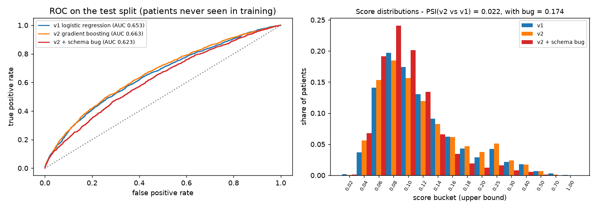
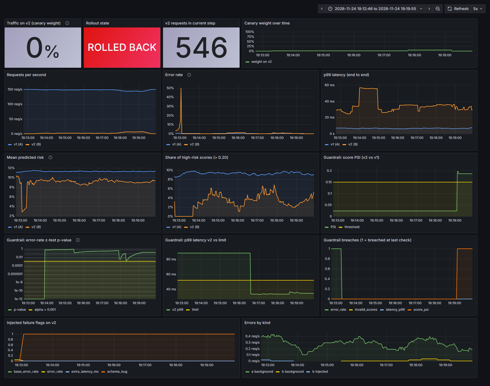

MLOps, ESIB, Fall 2026 · Dataset: UCI Diabetes 130-US hospitals · Repository: this folder
v1 (logistic regression) predicts whether a diabetic patient will be readmitted within 30 days. v2 (gradient boosting) is better offline but about ten times heavier. We built a canary release that moves patients to v2 in four steps (1% → 5% → 25% → 100%), checks four guardrails from Prometheus every 5 seconds, and rolls back automatically.
Decision. With a healthy v2 the rollout passed all four steps twice (≈ 7 minutes each) and v2
served 100% of traffic. Each injected failure was rolled back by the guardrail designed for it,
at 1% or 5% traffic. The canary shows v2 is safe to serve; it does not show v2 is better
(question 3), so @champion stays on v1 until a human promotes v2 after an A/B test. The model
version is tagged canary_result=passed.
| Scenario (flag on v2) | Outcome | Guardrail and value | Traffic, v2 requests, time |
|---|---|---|---|
| healthy (2 runs) | passed, 100% on v2 | all within limits | 441 s and 438 s |
| +50 ms latency | rolled back | p99 = 88 ms > limit 52 ms | 1%, 314 requests, 203 s |
| 5% HTTP 500 | rolled back | error gap 6.0 pts, z = 10.0, exact p = 6·10⁻⁶ | 1%, 65 requests, 46 s |
| silent schema bug (HTTP 200) | rolled back | PSI = 0.187 > 0.15 | 5%, 546 requests, 354 s |
All services run in Docker Compose on a laptop CPU (README for the diagram and commands).
u to v2 when sha256(u) mod 10,000 < weight × 10,000.
Assignment is sticky and monotonic: when the weight grows, users already on v2 stay there.
It measures what users see: end-to-end latency and errors.models:/readmission@champion and
@challenger from the MLflow registry. Failure flags: EXTRA_LATENCY_MS, ERROR_RATE,
SCHEMA_BUG. 8 worker processes each.patient_nbr as a stable user id.variant label.Data and models. Encounters ending in death or hospice are removed (they cannot be readmitted).
Split by patient_nbr, 70/15/15, seed 42: 69,623 / 14,887 / 14,833 encounters, 11.3% positives.
| v1 logistic regression | v2 gradient boosting | |
|---|---|---|
| Validation AUC | 0.663 | 0.676 |
| Test AUC | 0.653 | 0.663 |
| Recall in top 15% (val) | 0.300 | 0.313 |
| One prediction, p50 / p99 | 0.9 / 2.4 ms | 10.3 / 29.5 ms |

| Guardrail | Rule | Minimum v2 requests |
|---|---|---|
| error_rate | one-sided two-proportion z-test p < 0.001, gap ≥ 1 point, exact binomial test agrees | 50 |
| latency_p99 | p99(v2) ≤ 1.1 × (p99(v1) + 1.5 × 27.1 ms) | 300 |
| score_psi | PSI(v2 scores, v1 scores) ≤ 0.15, from 5% traffic | 500 |
| invalid_scores | NaN / out-of-range share ≤ 0.1% | 20 |
A breach must appear on two consecutive checks. Rollback = router weight 0; aliases unchanged. Both variants have a simulated background error rate of 0.2% (a flaky dependency); without it v1 has zero errors and the z-test has nothing to compare against.
Three choices go beyond the literal subject. Each one came from a real false rollback of a healthy v2 while tuning (5 of our first 6 healthy runs were rolled back):
LATENCY_ALLOW_OFFLINE_OVERHEAD=0).Why PSI starts at 5% and the threshold is 0.15. At 1% traffic v2 serves only ~100 patients, so its score distribution differs from v1's because the patients differ. Simulating thousands of random patient subsets:
| Traffic, v2 requests | Healthy PSI p99 | Schema-bug PSI p5 | False alarms at 0.15 | Detection at 0.15 |
|---|---|---|---|---|
| 1%, 300 | 0.46 | 0.21 | 67% | 99% |
| 5%, 500 | 0.14 | 0.16 | 0.5% | 96% |
| 25%, 1,000 | 0.08 | 0.15 | 0% | 93% |
Latency (+50 ms). p99 of v2 jumped to 88 ms while the limit was 52 ms; rolled back at 1% after
314 v2 requests. Errors (5% HTTP 500). Rolled back at 1% after 65 v2 requests (46 s): only
about 65 patient requests were exposed. Silent schema bug. number_inpatient (past inpatient
visits, the strongest predictor) is renamed upstream; the service imputes the missing column and
answers HTTP 200. Errors and latency stay normal; v2's mean predicted risk drops from 11.2% to 8.9%
and its test AUC from 0.663 to 0.623. Only the score PSI catches it: 0.187 at 5% traffic.


Other evidence: figures/grafana_{healthy,latency,errors}.png and figures/rollout_*.png.
Baseline error 0.2% on both variants; v2 with the bug fails 5.2%. With v1 getting 99× more traffic (its rate is essentially known), the one-sided z-test at α = 0.001 and 80% power needs 47 v2 requests (power formula). Our full rule (≥ 50 requests, gap ≥ 1 point, exact test, two consecutive checks) needs a median of 67 requests in 4,000 simulated canaries (90th percentile 129), i.e. ~45 seconds at 1.5 v2 requests/s. Live run: 65 requests, 46 s. The number grows fast as the injected error shrinks: +2 points needs 181 requests, +1 point 548.

Monte Carlo of 1,000 healthy rollouts per rule, each request bootstrapped from real traffic of the two healthy runs (error flag, end-to-end latency and score), with the controller's schedule:
| Rule (cumulative) | False rollbacks of a healthy v2 |
|---|---|
| Literal rules: p99 ≤ 1.1 × v1, α = 0.05, 1 breach, PSI > 0.10 | 100% (latency) |
| + allow v2's known extra latency | 100% (mostly PSI) |
| + minimum samples per guardrail | 93% |
| + PSI threshold = offline baseline + 0.10 | 89% |
| + α = 0.01 and gap ≥ 1 point | 65% |
| + 2 consecutive breaches | 50% |
| + exact binomial confirmation | 43% |
| + PSI from 5% traffic, n ≥ 500, threshold 0.15 | 4.3% |
| + α = 0.001 (≈ 0.05 / 60 checks) — shipped | 1.0% |
The cause is repeated testing: a rollout runs ~60–90 checks, and a 5% false-positive rate per check compounds (1 − 0.95⁶⁰ ≈ 95%). With α = 0.05 and a single breach, checking every 1 s rolls back 94% of healthy rollouts and every 20 s still 80%; the shipped rule stays at 0.4–1.6% whatever the interval. Live, the shipped rule passed both healthy runs. Limit of the simulation: requests are drawn independently, so it under-states the patient-clustering effect on PSI (covered by the PSI calibration above).

The canary answers "is v2 safe to serve?". "Is v2 better?" needs offline evaluation (done: AUC) and an A/B test on the business metric (subject P2).
number_inpatient directly, before scores move.@challenger to @champion is deliberately left to a human.